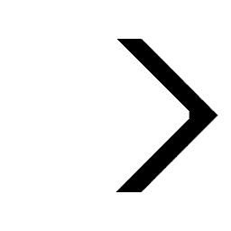
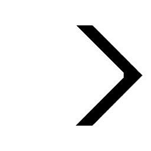

our growing uselessness and the importance of love
flow and the politics of fear
postmodern paranoia and the death of the free market
paralyzing thought patterns and moving forward
solving the eight queens problem with mutation and simulated annealing


 

Automation and Human Value
Towards the end of God Bless You, Mr. Rosewater, Vonnegut explains that we must learn to value humans for being humans, not for what they can produce. In the context of growing automation, his words ring more true than ever.
The debate on a living wage has brought to light a number of issues related to human survival and flourishing. For one, we have more than enough resources and capacity for production to ensure a comfortable life for every single human. Second, we are not currently doing this.
In fact, unemployment is growing, and rather than aiding human lives, automation seems to be replacing them.
Robots are incredibly good at a number of things, and in each of those ways, far better than humans could ever be. It's been years since computers have outclassed humans in matters of mere computation, but as time moves on they will inevitably become better than us at more and more things.
In response to this fear, a common tactic is to claim organic exceptionalism on the basis of our more abstract abilities. Our ability to create art, have dreams, feel emotions, etc. Rhetorically, this is weak. We're merely redefining intelligence as whatever it is that humans possess and robots do not, thus continually shielding ourselves. For our salvation however, this is an admirable tactic.
By placing value on increasing abstract abilities, we get closer and closer to Vonnegut's ideal of valuing humans on the very basis of their humanity. Robots are already making more and more of us irrelevant in terms of productivity, and I wouldn't be surprised if one day they were capable of art, emotions, etc. In fact, this work is already in development. My point here, is that as long as we are determined to value humans, the less we're able to do better than robots, the more our valuation approaches intrinsic unconditional love. The less we're able to see each others as producers of goods, the more we can see each other as humans.
This isn't necessarily the way things are going to develop, but it's one path, and it's one I like a lot.
^
Technophobia and Classism
The Glass Cage, Nicholas Carr's spiritual sequel to his almost award-winning The Shallows, is, he insists, about "automation's human consequences". As could be expect of any work detailing the problems with what everyone else is doing, the entire thing takes on the voice of a lamenter, alternating between decrying the direction of society and decrying consequences of automation on the author's own life. This is all fine, and certainly, someone has to say it, but Carr's assumption in writing The Shallows was that he existed as one small boat fighting against tremendous waves, and while it may often seem that technology is progressing relentlessly, the ideological battle is far from over. At least not if Carr's sales are anything to go by. The point of mentioning Carr's popularity and thus centrality in the debate is to acknowledge that his works must be subject to a high level of criticism. While a smaller truly subversive voice may escape our judgements solely due to the necessity of dissent, Carr's arguments can be offered no such solace. In support of his nostalgia for the manual car, Carr cites the famous work of psychologist Mihaly Csikszentmihalyi who first described the concept of Flow. The cost of automation, Carr insists, is the loss of Flow in our lives. The loss, that is, of the "shadowy intangibly things that we rarely appreciate until after they're gone". Again, fine, but in mentioning automation's role in narrowing "people's responsibilities to the point that their jobs consist largely of monitoring a computer screen or entering data into prescribed fields", Carr ignores the jobs and lives that have been expanded by automation. Mere centuries ago, the human work force was nearly entirely devoted to agriculture by absolute necessity, and while it may seem tempting to romanticize life on a farm as a spiritual communion with nature unhampered by modern conveniences, it's probably worth asking yourself when you last worked on a farm. Maybe there are plenty of farmers who have loved their work historically and who love it today, but in describing Flow, Csikszentmihalyi's is clear that it occurs when we're "completely involved in an activity for its own sake" and that "only through freely chosen discipline can life be enjoyed". The point being, that these conditions are necessarily in opposition to the kind of life governed by the need to survive. These conditions require luxury, and luxury requires automation. (or a hierarchical class structure i.e. slavery, but I shouldn't have to explain why that's worse). The freedom to write a book condemning automation, in other words, is a freedom brought by the very same privilege that automation allows. Not only literally, but intellectually as well.
^
Surveilance and Conformity
Postmodernism has long invoked the concept of paranoia to describe the fear of being watched which then motivates paralyzing self-awareness. Perhaps best described/mocked/critiqued by Dave Eggers in A Heartbreaking Work of Staggering Genius, paranoia has been described by social theorists as belonging to a Freudian psychosis, Baudrillardian hypervisibility or Lacanian narcissism. Under any framework, it's not quite clear whether the paranoia stems from an irrational fear of imagined surveillance, or from the same fear brought upon by actual surveillance. The latter, of course, is becoming more and more prominent.
Before cameras, the ever-judging eyes of a Judeo-Christian God have appeared in everything from the Bible to The Great Gatsby. In those works, there was a clear sin, and with it, a redeeming punishment. Surveillance in our world comes with its own pair of eyes, though more often than not these eyes are robotic, and in many ways this should come as a comfort.
As Lessig describes in Code, having robotic rather human surveillance is one argument (though non-intrusion is by far the most powerful one) protecting much of today's surveillance from 4th amendment limitations. As long as there isn't a person on the other side, our dignity doesn't seem to be damaged in the same way. More importantly, the right kinds of robots can ensure that the data is never used for nefarious purposes, or even uses outside its originally intended purpose. There's any number of concerns outside of this, but for the moment, lets focus on conformity.
In the most benign case, let's say the constant knowledge that one is being watched, even by a robot, generates a sense of unease that leads us to behave in the manner that is expected of us. Even in the best case scenario where the data really is only used for good reasons, this isn't at all unreasonable. Consider, for instance, how you act among close friends compared to how you would act in the same situation with a total stranger 10 feet away. Even if you're not doing anything disruptive or wrong, and even if the stranger has no power over you, there are certain behaviors we carry out around those close to us that are embarrassing around others. Or remember the last time you were left totally isolated, a situation parodied by The Onion not too long ago.
There are several much more serious concerns. Under governmental surveillance, data collected for any purpose will inevitably used to stop crime. Cameras in the UK set up to monitor traffic, for instance, can now be used to track a vehicle across London. On one hand, it would be ridiculous to have this kind of data and not use it, especially for a good cause. After all, the common argument goes, if you have nothing to hide, you have nothing to fear. Unfortunately, these methods also serve to eliminate any behavior that lies in a fairly large margin surrounding harmful illegality. There's nothing wrong with jaywalking in most cases, but if you saw a cop nearby you would probably hesitate. More seriously, you might hesitate to criticize the government or even promote serious reform if you knew there were agents watching your every move. Government watch lists exist for the very purpose of preventing crime before it happens, which means anything in the surrounding area immediately becomes suspect. And as demonstrated by post 9/11 TSA practices, wherever probabilistic law enforcement happens, prejudice is quick to follow.
In the private sector, concerns are a bit more fuzzy, but potentially just as serious. Since targeted advertising relies on the construction of patterns of expected behavior, it necessarily reinforces the same behavior. Or, in Lessig's words, "the observing will affect the observed. The system watches what you do; it fits you into a pattern; the pattern is then fed back to you in the form of options set by the pattern; the options reinforce the pattern; the cycle begins again" (Codev2).
Writing on the same subject, legal scholar Julie Cohen approaches from a different angle. The need to see individuals as individuals rather than "conglomerates of transaction data" for instance, is build into the very heart of the European Data Protection Directive. More than being a matter of dignity or philosophically abstract autonomy, the need to see citizens as capable of pursuing their own ends is as the very basis of any democratic system. Though heavily romanticized, particularly in the US, autonomy is not at all something that happens incidentally. Rather than existing passively as an immutable characteristic that we must only protect from infringement, autonomy is a trait that requires constant promotion. Analogously, political philosopher Martha Nussbaum, describes the right to vote as making sure a person "really can go out and vote, with no subtle impediments" rather than merely the legal right. Returning to the issue of autonomy, Cohens's concern is that "we are accustomed to physical spaces within which we can be unobserved, an intrusion into those spaces in experienced as violating the boundaries of self... pervasive monitoring of every first move or false start will, at the margin, incline choices towards the bland and mainstream. The result will be a subtle yet fundamental shift in the cognate of our character, a blunting and blurring of rough edges and sharp lines" (Examined Lives).
If this still seems convoluted, or if the fear of losing our democratic vigor is lost on the fear that we already have and that the populace is already largely un/misinformed when it comes to political matters, consider another outcome: the death of the free market.
I'm sure there are people whose attitude towards the free market is similar the the one I've just described about politics, but I'm sure even they would agree that in both cases it could get even worse. The danger of surveillance induced conformity is not only that it will regulate consumer behavior, but that it will prevent innovation since almost by definition, it requires a certain degree of contrarianism. The biggest proponent of this idea is probably Paul Graham who succinctly stated that "the best ideas look initially like bad ideas" (Black Swan Farming). Though cliche, the Silicon Valley spirit of disruption, revolutionizing X or Apple's infamously banal "changing everything" require a certain degree of freedom that I think surveillance could genuinely squash. Even the glorification of iconoclasm quickly devolves into the idolization of new gods.
^
Breaking the Security/Privacy Dichotomy with Palantir
I read Wittgenstein's lecture on ethics a while ago and was struck by the relative ordinariness of his conclusion. As a sort of mad-genius described by even Bertrand Russell as "dominating" who claimed to have solved all the problems in philosophy, and then reserved most of his judgements and was taken very seriously by the philosophical community both times, so much of Wittgenstein's work stands our as extraordinary that anything ordinary stands out even more. Here are the final lines of his lecture:
"Ethics so far as it springs from the desire to say something about the ultimate meaning of life, the absolute good, the absolute valuable, can be no science. What it says does not add to our knowledge in any sense. But it is a document of a tendency in the human mind which I personally cannot help respecting deeply and I would not for my life ridicule it."(A Lecture on Ethics)
What's oddly conventional here isn't the topic or language, but the more abstract rhetoric structure. Especially when speaking to general audiences, or at primarily ceremonial/celebratory functions, there's a huge temptation to speak very vaguely and conclude in a manner simultaneously satisfying and yet meaningless. The common strategy to achieve this latter aim is to go with some variation of the "flawed yet beautiful" (FYB) device.
As another example, see Eric Schwitzgebel's article on the ethics of ethicists. (Cheeseburger Ethics)
This strategy is fantastic because it allows the author to construct a nuanced and opinionated critique of a particular topic without actually having to come to a solution. More abstractly, the FYB doctrine is perfectly in line with serious happiness research about the value of acceptance, or buddhist ideology if that's more your thing. There's nothing inherently wrong with it, but when an entire pattern of thought becomes this automatic and pervasive, it's important to consider what its effects actually are.
Other lines of thought that produce the same result include "fine line between" (FLB), "strike a balance" (SAB) and "X matters, but without Y..." (XBY) where one is usually a philosophical abstraction and the other relatively concrete. While FYB serves to let the speaker appear rigorous and realistic but appropriately optimistic, FLB and SAB create the illusion of a thinker who has carefully considered both sides of an issue and is determined to remain intelligently non-dogmatic thus achieving all kinds of rhetoric boons. Finally, XBY is great because it allows the speaker to appear more practical than his lofty opponents (in the case where X is abstract) or more principled in the alternative case.
Rhetoric should not be considered merely in the case of a speaker presenting to an audience. Rather, these thought processes become so embedded in our minds that they appear even during our own internal reasoning. It's not only the framing of our conclusions that get affected, because we're attracted the ideas that are intellectually and emotionally satisfying, our opinions, remembered facts and even topics of interest are influenced by these thought patterns. As the XBY example illustrates, we're not necessarily biased in a single direction. We don't always choose abstractions over examples. Even more broadly, however, every pattern I've mentioned does bias us towards inaction. By definition, satisfying ideas function as end points that top off queries and prevent further exploration.
Again, this is fine in most cases. I don't want to spend my life constantly diving down rabbit holes. I'm far from being anti-intellectual, but if coming to a cheap XBY conclusion about the importance of space travel (e.g. "funding NASA may prevent us from fulfilling more immediate needs, but if we lose the capacity for exploration and the joy of discovery, mere sustenance loses its meaning altogether") or a SAB conclusion about nutrition (e.g. "you have to strike a balance between eating what you love and being healthy enough to love the rest of life") allows me to spend more time thinking about the social influence or technology or the potential for artificial intelligence, the cost is well worth it.
Still, it's important to recognize the additionally cost of losing potential insights when ideas are capped too quickly. Aside from killing your curiosity altogether, innovation even in one specific field of expertise often arises through influence or inspiration from other, sometimes totally unrelated, fields.
And then there's the problem of choosing what to cap off in the first place. Many of the things I love thinking about today seemed totally uninteresting 5 years ago, and I couldn't be more glad that I continued thinking about them anyway.
In short, it's very difficult to determine exactly where these thought patterns should be used, but there are cases where they should definitely be avoided. As most of my work now consists largely of thinking about HCI, that certainly seems like an area where I should strive to remain as open minded as possible.
I mention all this in the context of the security/privacy dichotomy because of the efforts of a company called Palantir. In post literally titled "Balancing Security and Civil Liberties", Congressman Gregg Harper epitomized the popular SAB conclusion, stating that "The USA Freedom Act included a wide spectrum of supporters, from civil libertarians to national security hawks and struck the delicate balance between preserving privacy rights and protecting our country from terrorist threats."(http://harper.house.gov/enewsletters/balancing-security-and-civil-liberties) In stark contrast, Palantir engineer Asher Sinensky insists that "It is possible to achieve security while at the same time protecting our privacy & civil liberties" deeming the idea one of Palantir's "founding Principles" (Quora).
In addition to biasing us towards inaction, these thought patterns play the particularly harmful role of forcing us into dichotomies that often aren't accurate. If you spend your life trying to strike the right balance between spending time writing code and reading philosophy, you'll never even imagine that a field like HCI exists to combine the two, and if you're too busy thinking of security and privacy as opposites to imagine that they could work together, you'll never found a company like Palantir.
What I've enjoyed most of all in reading the literature around Palantir's PCL work is the nearly unambiguous promotion of immediate real change that accompanies all the desire behind it. Legal scholar Julie Cohen for example ends a very abstract piece on everything from theories of ownership to theories of knowledge with the surprisingly definitive conclusion that "law can and should establish a new set of institutional parameters that supply incentives for the design of privacy-enhancing technologies to flourish"(Examined Lives). For his part, professor of Internet Governance and Regulation Mayer-Schonberger becomes very seriously involved in the complexities of time and memory but then concludes with a call for "permission devices" that would allow the the automatic deletion of certain files (Remember to Delete). In a similar vein but much more intensively, Lessig's writings on IP law and internet regulation deal with the fundamental nature of artistic creation and the most humanistic of privacy concerns, but also culminate in some of the most precise and actionable suggestions for further work I've seen outside of work dedicated to policy recommendation.
Inspired by this work, and by the founders' own experience working on Pay Pal, Palantir has seamlessly integrated privacy controls into software designed to aid surveillance. As Palantir spokesperson (and so much more) Bryan Cunningham describes, the privacy functionality actually aids the surveillance work, if it seemed at all burdensome or superfluous, companies simply wouldn't use it (Protecting Privacy). I won't go into all the details of Palantir's solutions, though they're certainly worth reading about. Even if you're not interested in privacy, it's a fascinating navigation of what I genuinely considered to be a somewhat irresolvable problem before encountering their work.
^
Evolving Queens
Since I started Peter Norvig's book on Artificial Intelligence, I felt compelled to work through at least a couple of the problems he mentions. Reading through the first section, what's more exciting than anything else is the opportunity to combine multiple solutions into one. It's a bit generous to call this code "genetic" or to say that I've really used SA, but it's a start.
For anyone who wasn't faced with it growing up, the eight queens problem is simple. A queen is a chess piece that can move any number of squares horizontally, vertically or diagonally. Your goal is to put eight of them on a board so that none of them can attack any of the others.
A potential solution can be represented as an array where each element refers to the position of the queen on the board. For example, a queen in the bottom right corner would be represented by a seven in index seven of the array. Because evolution works better when you have a population of not-zero, we're using a 2 dimensional array with 10 proposed solutions in any given generation.
Since we only want the best solutions of any given generation to evolve, we need a fitness function to determine how good any given solution is. For the eight queens problem, this just means counting the number of possible attacks by checking the attack paths of each queen.
Based on these scores, we also need to choose which solutions get to breed. Initially, I was using the algorithm that determines how many seats each state gets in the house of representatives, but it turned out to be more effective to only let the best solution of any given generation survive.
At that point, it's a simple matter of "mutating" the solution and propagating a new generation.
The simulated annealing part of this is a single line of code. I said it was generous.
This means that as time moves on, fewer and fewer genes get mutated with each generation. The reasoning here being that we're getting closer to an optimal solution and don't need to "shake things up" as much. The % function here serves to reset the "temperature" of the system in the case that a solution isn't reached after 300 steps.
Full program can be found here.
^